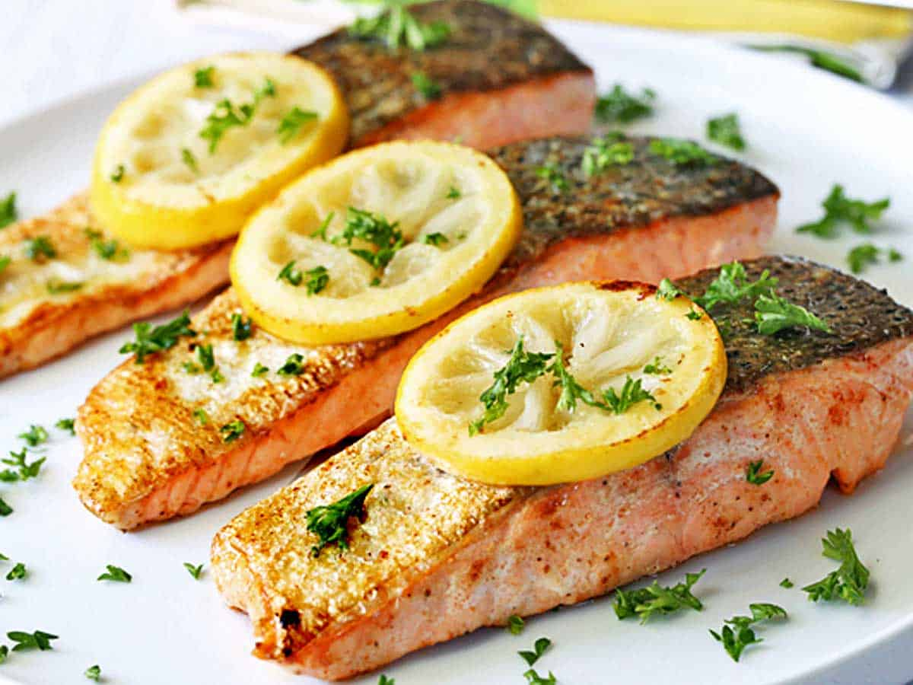

Pan-Seared Salmon

Overview
Elevate your dinner game with the perfect combination of class and ease. Whether you're impressing a date or just treating yourself to one of the finer things in life, you'll be able to enjoy a quality meal without any fuss.
Alternatively, you can go back to the home page if you'd rather try something else.
Ingredients
- Non-Stick Skillet
- A Stove (+ the necessary utilities to power it)
- Salmon Fillets
- Salt
- Black Pepper
- Olive Oil or Butter
- Optional: Lemon Slices and/or Fresh Herbs (think: Dill, Parsley, or Rosemary) for garnish
Directions
- Bring the salmon to room temperature and pat it dry. Season both sides with salt and pepper.
- Heat a serving of olive oil or butter over medium-high heat in your non-stick skillet.
- Place the salmon down in the skillet (skin-side down if you opted to keep the skin on). Sear it undisturbed for 4-5 minutes until the skin is crispy.
- Gently flip the salmon and cook for another 3-4 minutes or until your desired "doneness" is achieved.
- Plate your salmon and garnish it with whichever of the optional ingredients you brought.
- Eat!
Additional Notes
Works extremely well when paired with a side of your choice. Our personal recommendations are salads, steamed vegetables, or even French fries.